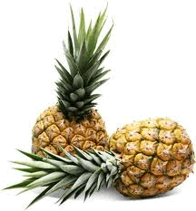

Ananás ou abacaxi é uma planta monocotiledônea da família das bromeliáceas, subfamília Bromelioideae. Os abacaxizeiros cultivados pertencem à espécie Ananas comosus, que compreende muitas variedades frutíferas. Há também várias espécies selvagens, pertencentes ao mesmo gênero e grupo.
Fonte: Wikipedia